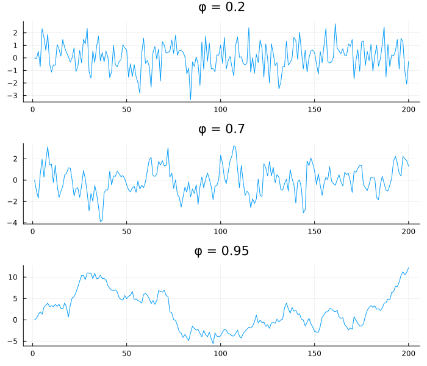
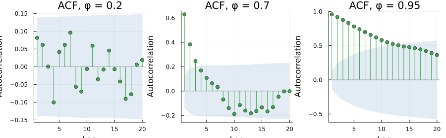
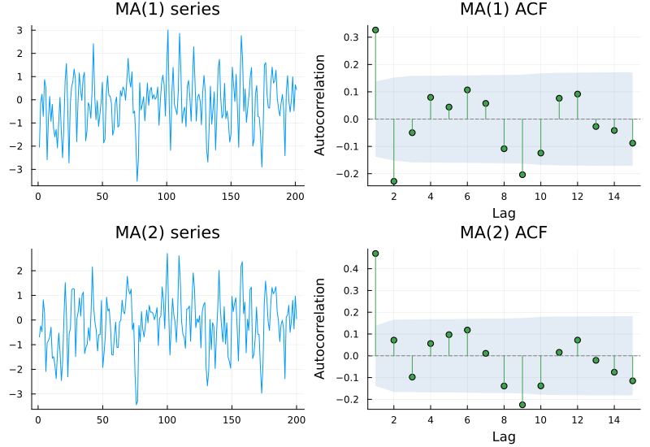
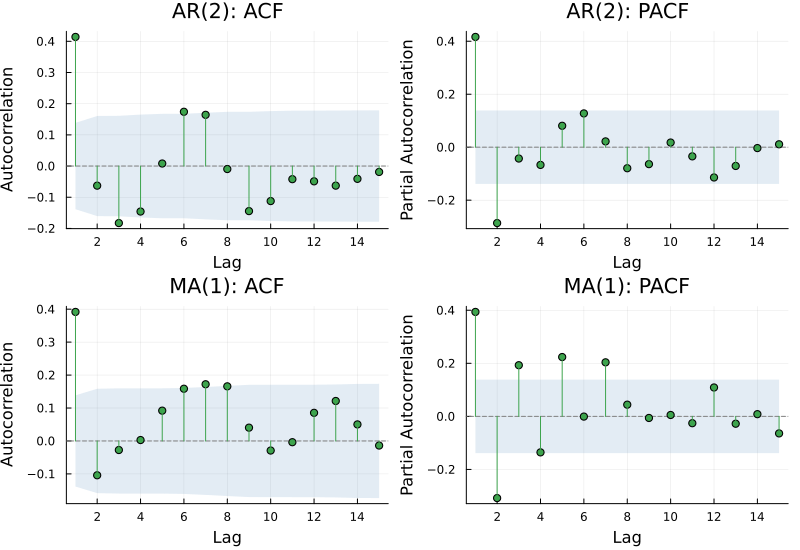
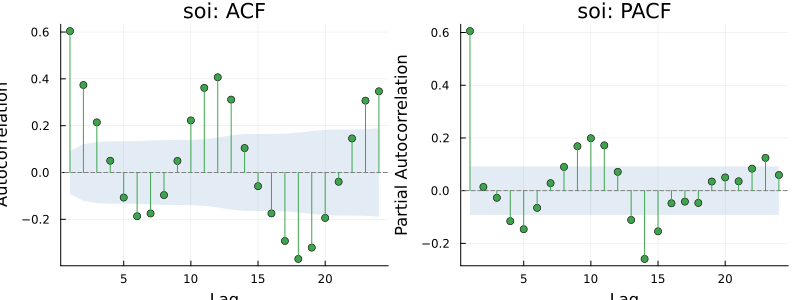
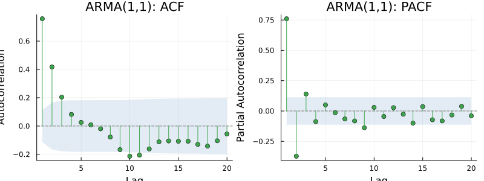
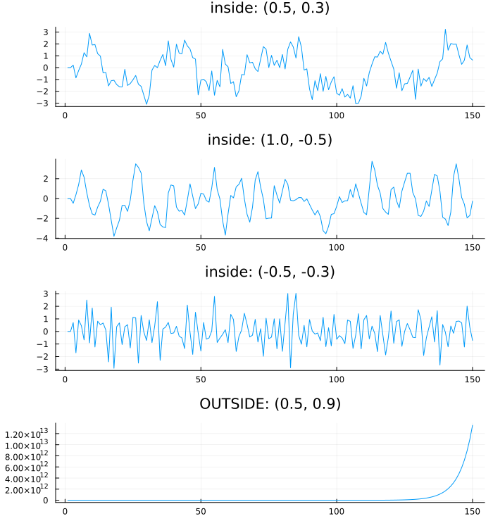
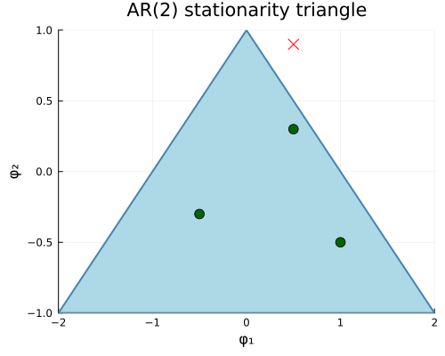

AR and MA Processes
Everything in the first sixteen chapters described a series that already existed — where its trend went, how its variance behaved, which frequencies it carried, how to split it into pieces. None of it explained why the series looked the way it did. This chapter introduces the two building blocks that every model in the rest of this Part is assembled from.
A series that remembers
using TSAnalytics, Plots, Random
Random.seed!(1)
n = 200
function simulate_ar1(phi, n)
y = zeros(n)
for t in 2:n
y[t] = phi*y[t-1] + randn()
end
return y
end
y1 = simulate_ar1(0.2, n)
y2 = simulate_ar1(0.7, n)
y3 = simulate_ar1(0.95, n)
p1 = plot(y1; title="φ = 0.2", legend=false)
p2 = plot(y2; title="φ = 0.7", legend=false)
p3 = plot(y3; title="φ = 0.95", legend=false)
plot(p1, p2, p3; layout=(3,1), size=(700,600))
All three series (simulated, generated by the same rule with the same random shocks driving each step) — only the coefficient differs. At φ = 0.2 the picture looks nearly like noise; each value depends only weakly on the one before it. At φ = 0.7 visible runs appear — stretches where the series stays above or below its own average for several steps in a row. At φ = 0.95 the series wanders for long stretches and looks almost like the random walk of Chapter 8, which it nearly is: φ = 1 exactly is a random walk, and this is the autoregressive process of order one, AR(1), written y_t = φ·y_{t-1} + e_t. One parameter moves a process all the way from "essentially unpredictable" to "essentially non-stationary."
p1 = plot(acf(y1, 1:20); title="ACF, φ = 0.2")
p2 = plot(acf(y2, 1:20); title="ACF, φ = 0.7")
p3 = plot(acf(y3, 1:20); title="ACF, φ = 0.95")
plot(p1, p2, p3; layout=(1,3), size=(900,280))
Geometric decay in every case, at three different speeds. That decay rate is φ — the AR(1) process has autocorrelation φ^k at lag k by construction, and the picture is the formula. This is the first time in the book that a chart and a parameter have turned out to be the same thing.
Indian monthly inflation and industrial-growth series typically show AR coefficients in the 0.7 to 0.95 range — persistent enough that a shock takes many months to fade, sitting close to the right-hand panel above rather than the left. That is precisely the region Chapter 9's power curve identified as hardest to test for a unit root: a highly persistent stationary process and a genuine random walk produce sample paths that look alike over any sample size actually available, and the ADF test's power there was shown to be weak for exactly that reason. Persistence and testability are inversely related, and Indian macro data sits on the awkward side of that trade.
A series that forgets
Random.seed!(2)
e = randn(n+2)
y_ma1 = e[2:end] .+ 0.6 .* e[1:end-1]
y_ma2 = e[3:end] .+ 0.6 .* e[2:end-1] .+ 0.4 .* e[1:end-2]
p1 = plot(y_ma1; title="MA(1) series", legend=false)
p2 = plot(acf(y_ma1, 1:15); title="MA(1) ACF")
p3 = plot(y_ma2; title="MA(2) series", legend=false)
p4 = plot(acf(y_ma2, 1:15); title="MA(2) ACF")
plot(p1, p2, p3, p4; layout=(2,2), size=(800,550))
Both series above are simulated. The MA(1) ACF cuts off after lag 1 — not decays, cuts: the bars beyond lag 1 sit inside the confidence band, indistinguishable from zero. The MA(2) ACF cuts off after lag 2. Where an AR process carries influence forward indefinitely with diminishing weight, a moving-average process — y_t = e_t + θ·e_{t-1} for MA(1), one more term for MA(2) — carries it for exactly q periods and then stops dead.
The mechanism is worth stating plainly. In an AR process, today's value depends on yesterday's value, and that value itself depended on the one before it, so influence propagates indefinitely, each step attenuated but never zeroed. In an MA process, today's value depends on yesterday's shock directly, and a shock that is q+1 steps in the past simply does not appear in today's equation at all. There is nothing left to propagate.
The identification pair
Random.seed!(3)
y_ar2 = zeros(n)
for t in 3:n
y_ar2[t] = 0.6*y_ar2[t-1] - 0.3*y_ar2[t-2] + randn()
end
e2 = randn(n+1)
y_ma1b = e2[2:end] .+ 0.7 .* e2[1:end-1]
p1 = plot(acf(y_ar2, 1:15); title="AR(2): ACF")
p2 = plot(pacf(y_ar2, 1:15); title="AR(2): PACF")
p3 = plot(acf(y_ma1b, 1:15); title="MA(1): ACF")
p4 = plot(pacf(y_ma1b, 1:15); title="MA(1): PACF")
plot(p1, p2, p3, p4; layout=(2,2), size=(800,550))
This is the chapter's core, and both series are simulated so the answer is known in advance. The two processes are mirror images. AR gives a decaying ACF and a PACF that cuts off at p — the AR(2) above cuts off after lag 2, exactly its own order, because the partial autocorrelation function was built in Chapter 5 for precisely this purpose: to strip away the correlation that arrives second-hand through the observations in between. MA gives the opposite pairing, an ACF that cuts off at q and a PACF that decays. That symmetry is the Box–Jenkins identification method in one picture, and it is genuinely usable — a reader who internalises this chart can name simple models by eye.
soi = dataset("soi")
p1 = plot(acf(soi.value, 1:24); title="soi: ACF")
p2 = plot(pacf(soi.value, 1:24); title="soi: PACF")
plot(p1, p2; layout=(1,2), size=(800,300))
Real data — the Southern Oscillation Index, no simulation involved — and nothing here cuts off cleanly. The ACF oscillates and decays slowly, dipping negative past lag 5 and staying there for a stretch before climbing back; the PACF has a sharp spike at lag 1 but then a scatter of small, diffuse bumps rather than one clean cutoff. Say this plainly rather than apologising for it. The clean pictures two panels back came from simulated data with a known answer. Real series are mixtures of effects, they carry sampling noise on top of whatever true structure exists, and their sample correlograms are estimates with their own uncertainty — Chapter 5's confidence bands existed for exactly this reason. A reader who expects the AR(2)/MA(1) chart and meets this one in their own work should conclude their expectations were the thing that needed adjusting, not that the method is broken.
Both at once
Random.seed!(11)
n2 = 300
e3 = randn(n2+50)
y_arma = zeros(n2+50)
phi_t, theta_t = 0.6, 0.5
for t in 2:n2+50
y_arma[t] = phi_t*y_arma[t-1] + e3[t] + theta_t*e3[t-1]
end
y_arma = y_arma[51:end]
p1 = plot(acf(y_arma, 1:20); title="ARMA(1,1): ACF")
p2 = plot(pacf(y_arma, 1:20); title="ARMA(1,1): PACF")
plot(p1, p2; layout=(1,2), size=(800,300))
A simulated ARMA(1,1), y_t = 0.6·y_{t-1} + e_t + 0.5·e_{t-1}, and neither correlogram cuts off — both decay, gradually, with no obvious place to stop. Visual identification, which worked so well two charts ago, has stopped working here. That is a real limit, not a failure of technique, and it matters because most real series are ARMA rather than pure AR or pure MA. Chapter 21 builds an automated answer to the question this chapter's eye can no longer settle.
m_arma = fit_arma(y_arma, (1,1); include_mean=false)
m_ar6 = fit_arma(y_arma, (6,0); include_mean=false)
println("ARMA(1,1): loglik=", round(m_arma.loglik, digits=2), " aic=", round(m_arma.aic, digits=2), " (2 parameters)")
println("AR(6): loglik=", round(m_ar6.loglik, digits=2), " aic=", round(m_ar6.aic, digits=2), " (6 parameters)")ARMA(1,1): loglik=-443.84 aic=893.68 (2 parameters)
AR(6): loglik=-443.27 aic=900.54 (6 parameters)Fitted rather than merely asserted, on the same ARMA(1,1) data: the AR(6) reaches a log-likelihood only slightly better than the ARMA(1,1)'s, spending four extra parameters to do it. A pure AR model can approximate an MA component, but only by burning parameters on the approximation — an AR(∞) representation of an MA(1) exists in principle, and AR(6) is a six-term truncation of it. AIC, which trades off fit against parameter count, already prefers the smaller model here (the AR(6)'s extra likelihood does not cover its own penalty). That is what the MA term buys: the same description, more cheaply. Cheapness is not aesthetic — Chapter 21 will show that every extra parameter costs accuracy on data the model has not yet seen.
Where the process can and cannot live
function simulate_ar2(phi1, phi2, n)
y = zeros(n)
for t in 3:n
y[t] = phi1*y[t-1] + phi2*y[t-2] + randn()
end
return y
end
Random.seed!(21)
pts = [(0.5, 0.3), (1.0, -0.5), (-0.5, -0.3), (0.5, 0.9)]
labels = ["inside: (0.5, 0.3)", "inside: (1.0, -0.5)", "inside: (-0.5, -0.3)", "OUTSIDE: (0.5, 0.9)"]
plots = [plot(simulate_ar2(p[1], p[2], 150); title=l, legend=false) for (p,l) in zip(pts, labels)]
plot(plots...; layout=(4,1), size=(700,750))
plot(; xlims=(-2,2), ylims=(-1,1), xlabel="φ₁", ylabel="φ₂",
title="AR(2) stationarity triangle", legend=false, size=(500,400))
plot!([-2,0,2,-2], [-1,1,-1,-1]; fill=(0,:lightblue), linewidth=2, color=:steelblue)
scatter!([p[1] for p in pts[1:3]], [p[2] for p in pts[1:3]]; markersize=6, color=:darkgreen)
scatter!([pts[4][1]], [pts[4][2]]; markersize=6, color=:red, markershape=:x)
Not every coefficient pair gives a usable process. An AR(2) is stationary exactly when (φ₁, φ₂) falls inside the triangle bounded by φ₁ + φ₂ < 1, φ₂ − φ₁ < 1 and −1 < φ₂ < 1 — the three green points above all satisfy it, and their simulated series above stay bounded, wandering but never running away. The red point, (0.5, 0.9), sits outside — φ₁ + φ₂ = 1.4 ≥ 1 — and its series does exactly what the picture predicts: checked directly, it reaches magnitude 2.4 × 10¹³ within 150 steps, visibly diverging in the panel above rather than merely being asserted to. This is why the optimiser behind Chapter 18's fit_arma cannot simply search (φ₁, φ₂) freely — it has to stay inside this region, and getting that constraint right is a real implementation problem, not a technicality.
MA processes carry a mirror condition, invertibility, needed for a different reason: without it, more than one set of MA coefficients produces the identical autocorrelation function, so the model is not identifiable from data alone. Software resolves the ambiguity by silently choosing the invertible representation whenever it finds the other one.
This package enforces both constraints the same way, with the same function. partrans maps an unconstrained vector in ℝᵖ onto the stationary region for AR coefficients or the invertible region for MA coefficients — via a tanh squash into (-1,1) followed by a Durbin–Levinson-style recursion — and fit_arma/fit_sarima call it identically on phi and on theta. The optimiser itself never evaluates a constraint or rejects a candidate point; it searches freely over all of ℝᵖ, and every point it can reach maps to a valid coefficient vector by construction. The triangle in the chart above is enforced by a change of variables, not by a boundary check.
Where this leaves you
You can now recognise these two processes on sight and you know what their parameters mean — a decaying ACF paired with a cutting-off PACF, or the reverse, and a region in parameter space a real process cannot leave. What you cannot yet do is estimate one from data: every series in this chapter was simulated with the answer known in advance. Chapter 18 removes that scaffolding.